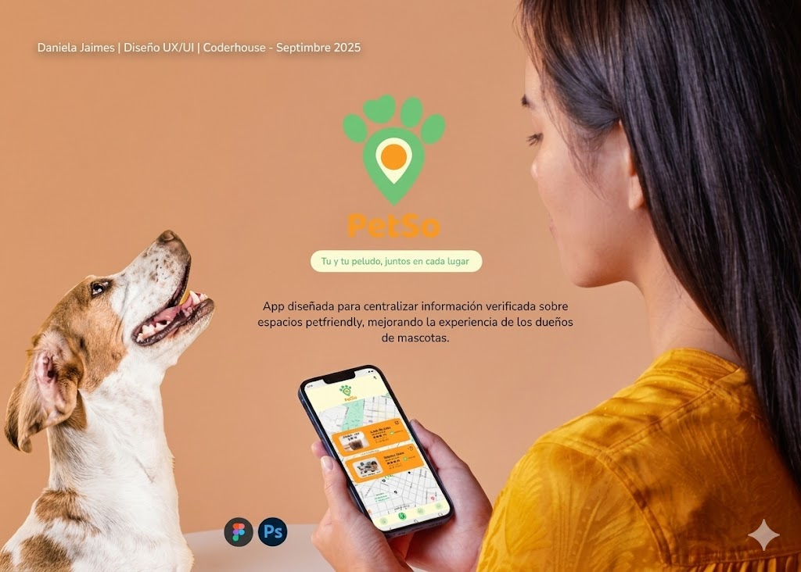

PetSo
App
Espacios pet-friendly
App diseñada para centralizar información verificada sobre espacios petfriendly, mejorando la experiencia de los dueños de mascotas al salir con su peludo.
2025
Año
Figma
+ PS
Herramientas
iOS
Android
Plataforma
Solo
Rol

Rol
UX/UI Designer (solo)
Metodología
Design Thinking
Entregables
Prototipo Hi-Fi · Sistema UI
Contexto
Coderhouse · Sep 2025
El problema de los dueños de mascotas
Salir con una mascota debería ser una experiencia placentera, pero la realidad es frustrante.
Información dispersa y no verificada
Los dueños de mascotas pierden tiempo buscando en múltiples fuentes (Google, Instagram, grupos de Facebook) si un lugar es realmente petfriendly, encontrando información desactualizada o contradictoria.
Sin geolocalización contextual
No existe una plataforma centralizada que muestre espacios petfriendly cercanos en tiempo real, con detalle de qué tipo de mascotas aceptan (tamaño, raza) y qué servicios ofrecen.
Falta de reseñas de la comunidad
Las reseñas existentes en plataformas generales no distinguen la experiencia para quienes van con mascotas, dejando a los dueños sin información relevante para tomar decisiones confiadas.
+60%
De los usuarios lleva mascotas a espacios públicos
Según encuesta inicial
3+
Búsquedas antes de encontrar info confiable
Promedio detectado en entrevistas
0
Apps especializadas en el mercado latinoamericano
Análisis competitivo
Investigación y hallazgos
Para entender profundamente el contexto, se aplicaron diferentes técnicas de investigación centradas en el usuario.
Entrevistas con usuarios
Se entrevistaron dueños de mascotas de distintos perfiles: personas que viven solas, familias y personas que trabajan desde casa.
- check_circleFrustración por info desactualizada en Google Maps
- check_circleNecesidad de filtrar por tipo/tamaño de mascota
- check_circleValor de opiniones de otros dueños de mascotas
Análisis competitivo
Se revisaron apps relacionadas (Bring Fido, Yelp, Google Maps) para identificar brechas y oportunidades en el mercado hispanohablante.
- check_circleBring Fido solo en inglés, sin foco latinoamericano
- check_circleGoogle Maps no filtra por política de mascotas
- check_circleOportunidad clara de nicho localizado
Encuesta cuantitativa
Encuesta online a dueños de mascotas para validar hipótesis y dimensionar el problema antes de diseñar.
- check_circle+60% sale con su mascota al menos 1 vez por semana
- check_circle78% busca info antes de salir con su mascota
- check_circle85% usaría una app especializada si existiera
User Persona principal
Sofía, 28
Dueña de "Canela" (Golden Retriever) · Bogotá
"Los fines de semana quiero salir con mi perra pero siempre termino llamando a los lugares antes de ir. Es agotador no saber qué lugares la aceptan realmente."
sentiment_very_dissatisfiedFrustraciones
- ✗Pierde tiempo buscando en múltiples plataformas
- ✗Llega a lugares que no aceptaban su raza/tamaño
- ✗No encuentra reseñas específicas para mascotas
- ✗Horarios y políticas cambian y no están actualizadas
emoji_objectsNecesidades
- ✓Ver lugares petfriendly cercanos en el mapa
- ✓Filtrar por tipo y tamaño de mascota
- ✓Leer reseñas de otros dueños de mascotas
- ✓Información verificada y actualizada
Definición y diseño conceptual
Los hallazgos se convirtieron en oportunidades de diseño concretas mediante la metodología HMW.
HMW #1
¿Cómo podríamos centralizar y verificar información sobre espacios petfriendly para que los dueños confíen en los datos antes de salir?
HMW #2
¿Cómo podríamos hacer que filtrar por tipo de mascota sea tan fácil que el usuario no tenga que pensar si su peludo es bienvenido?
Arquitectura de información
Inicio / Mapa
Vista principal con geolocalización y lugares cercanos
Búsqueda y Filtros
Por tipo de lugar, mascota, rating y distancia
Detalle del lugar
Fotos, políticas, horarios y reseñas de dueños
Perfil y Guardados
Perfil de mascota y lista de favoritos
Las funcionalidades clave
Cuatro pantallas que resuelven directamente los puntos de dolor más críticos detectados en la investigación.
Vista de mapa con places cercanos
La pantalla principal muestra un mapa en tiempo real con todos los espacios petfriendly verificados cerca del usuario. Con un vistazo se ven categorías (cafés, restaurantes, parques, hoteles) mediante iconos distintivos.
- check_circleGeolocalización automática al abrir la app
- check_circleÍconos por categoría para identificación rápida
- check_circleRating visible sin necesidad de abrir el lugar
Mapa interactivo con pins por categoría
Filtros por tipo y tamaño
Filtrado inteligente por mascota
El sistema de filtros permite especificar tipo de mascota, tamaño y categoría de lugar, eliminando de forma instantánea los espacios que no aplican.
- check_circleFiltro por especie: Perro, Gato, Ave y más
- check_circleFiltro por tamaño: Pequeño / Mediano / Grande
- check_circleFiltro por categoría: Café, restaurante, parque, hotel
Ficha verificada del lugar
Cada espacio tiene una ficha completa con información verificada: fotos reales, política de mascotas completa, horarios y reseñas exclusivas de dueños de mascotas.
- check_circleBadge verificado para establecimientos activos
- check_circlePolítica detallada: razas, tamaños, áreas habilitadas
- check_circleReseñas con fotos de mascotas en el lugar
Café La Huella
Resultados del prototipo
Resultados obtenidos al testear el prototipo de alta fidelidad con usuarios reales dueños de mascotas.
↓65%
Tiempo en encontrar un lugar
vs. proceso actual sin app
90%
Tasa de éxito en tareas clave
Test de usabilidad Hi-Fi
4.8/5
Satisfacción percibida
Escala SUS adaptada
100%
Usaría la app regularmente
Intención de uso post-test
Aprendizajes clave
La confianza es el producto
Los usuarios no solo buscan información: buscan información en la que puedan confiar. El badge de "verificado" fue el elemento más valorado en las pruebas.
El filtro es la killer feature
El filtro por tipo y tamaño de mascota resultó ser la funcionalidad más diferenciadora: ningún competidor lo ofrecía con ese nivel de especificidad.
La comunidad genera valor
Las reseñas de otros dueños de mascotas se percibieron como mucho más confiables que las reseñas generales. La identidad de comunidad fortalece el producto.
¿Tienes un proyecto en mente?
Me encantaría escuchar tus desafíos y trabajar juntos para encontrar la mejor solución centrada en el usuario.